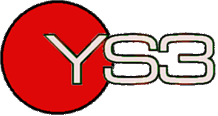

|  | Contributor Wanted |
|
YS3 Needs You! YS3 is a monthly Spectrum webzine with an expanding readership. In order to more fully deliver the monthly recommended dose of news, reviews and entertainment, we require a new contributor-type chappie or chapess. (Preferably chapess. Ahem. No, really, it'd even things out. Or something.) Wannabe contributors need to be entertaining writers, although you get bonus points if you know what a Spectrum is. So, if you think you've got what it takes, or you'd like to know more about what we'll require of you for NO MONEY WHATSOEVER (Jon, leave my keyboard alone!) and a COMPLETE DISREGARD FOR YOUR PERSONAL LIFE AND MENTAL WELL-BEING (Stop that now!), then pop an e-mail in our direction. Go on, you know you want to. -- personnel@ys3.co.uk It *is* that bad really. (That's it! Jon, you're fired!) |